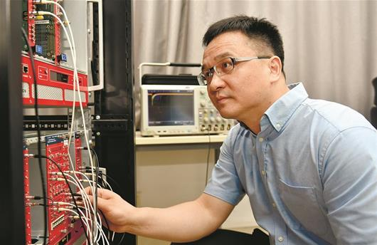

"Camera" can pull out cancer cells as soon as it is taken
Interview with Medical Imaging Innovation Expert - Inventor of Digital PET, Xie Qingguo
Photo: Professor Xie Qingguo conducting photon detection experiments
By reporter Yue Yi and intern Luo Wenhui for the newspaper Chu Tian City Daily; photographer Wang Yongsheng
Date of Interview
October 8, 2018
Profile
Xie Qingguo is a researcher at the National Laboratory of Optoelectronics, Huazhong University of Science and Technology (HUST), and a professor at HUST. He is also a recipient of the National Distinguished Youth Scholar Fund. Xie is the inventor of Digital PET. His research focuses on PET imaging methods and instrument development. In 2001, he established the Digital PET laboratory at Huazhong University of Science and Technology, solving the world-renowned challenge of front-end digitalization in PET.
Background
PET, as the most advanced medical imaging technology following ultrasound, CT, and MRI, is crucial for early cancer detection and treatment guidance. Recently, Xie Qingguo's team at Huazhong University of Science and Technology successfully completed preliminary clinical trials of their independently developed clinical Digital PET/CT in two affiliated hospitals of Sun Yat-sen University in Guangzhou. It took 18 years to invent the Digital PET, which breaks the monopoly of a few multinational companies over PET technology and addresses three long-standing shortcomings of traditional PET: low precision, difficult use, and narrow application.
Creating High-Precision 'Cancer Camera' with 18 Years
Reporter (Q): Compared to CT and other imaging methods, what are the characteristics of PET?
Xie Qingguo (X): PET is a highly sensitive nuclear medicine molecular imaging technology that can detect malignant tumors, neurological diseases, cardiovascular diseases, etc., earlier than other technologies.
Q: How does PET identify cancer cells?
X: Cancer cells have higher metabolic activity compared to normal cells. To put it simply, if normal cells eat one bowl of rice per meal, cancer cells might consume two bowls. When the glucose metabolism tracer corresponding to metabolism enters the body, areas with high consumption (cancer cells) will appear brighter while normal tissues remain relatively darker. PET imaging of the tracer can capture metabolic activity distribution within the human body and thus 'identify' early-stage lesions.
Q: In what ways does Digital PET surpass traditional PET?
Xie: It's said that it takes ten years to hone a sword. Full digital PET compared to traditional PET is like the transition from film cameras to digital cameras; it's not just an upgrade in technology, but a complete reinvention. Compared with traditional PET, full digital PET has three major advantages: first, precise and stable signals can detect smaller tumors and lesions; second, it can integrate with artificial intelligence and machine learning, making full digital PET more accurate over time; third, digital PET achieves highly modular design, allowing it to be combined with other medical devices.
From an industrial perspective, all the components inside full digital PET are standard electronic parts that can be updated. This makes it less likely for anyone to monopolize them and reduces the risk of being restricted by others.
Looking forward to digital PET benefiting the public soon
Q: How is this technology currently being applied?
Xie: We are accelerating the clinical application process. Related products such as ultra-long-travel super full digital PET, ultrahigh sensitivity proton knife PET, and full digital brain PET are all under tight development.
Of course, digital PET is a completely new thing, and new things take a long time to move from niche recognition to widespread acceptance. For domestic high-end medical devices to lead in technology, products, and the market, it's not something that happens overnight; it requires substantial practical applications. This is why we continuously advocate for building application demonstration centers. If digital PET can highlight its advantages through continuous innovation, it will be more readily accepted.
Q: What does launching a new digital PET into the market mean?
Xie: China has the highest number of cancer deaths globally. If digital PET can achieve large-scale production, patients could receive earlier diagnosis and timely treatment. For cancer patients, this might mean the difference between tens of thousands versus hundreds of thousands in medical expenses, or even life and death.
Using PET to detect early-stage dementia is not a dream
Q: Has the development of digital PET reached its peak?
Xie: On the contrary, it's far from over. Current PET imaging can only provide clear images but lacks precise quantitative data; if we could achieve breakthroughs in quantification, it would bring revolutionary changes to disease diagnosis and pathological research. For example, Alzheimer's disease begins with brain function decline years or even decades before symptoms appear, and currently, PET is the only possible medical imaging method for early observation of this process, but such observations require quantitative comparison of different time points.
Q: Truly, after one mountain comes another
Xie: Yes. Since graduation, I've decided to make PET research my lifelong career, and 18 years later, it's just the beginning.
Wuhan is like a magnet that drew me back
Q: I noticed there’s a prominent sign on your office door saying “Don’t Panic” (Do Not Panic), what does this mean?
Xie: This sentence is a famous quote from the science fiction classic 'The Hitchhiker's Guide to the Galaxy.' It appears on the cover of the guidebook, reminding interstellar travelers not to panic when entering unknown space and time. I use it to convey two meanings: first, the path of scientific research leads into the unknown, and one must have the courage to forge ahead; second, I always welcome students to come for exchanges, hoping everyone will boldly knock on my door.
Note: You have conducted research in cities like Taipei and Chicago. Why did you ultimately choose Wuhan as the base for your PET business?
Xie: Huazhong University of Science and Technology boasts both top-tier engineering and medical programs, a rare combination globally. Digital PET is a typical interdisciplinary study that requires such unique conditions. Personally speaking, I am an old Huake person; my undergraduate and doctoral studies were at Huazhong University of Science and Technology, and the employee numbers I received after staying on campus started with '19.' A strong sense of alma mater played a significant role. As a citizen of Wuhan, I hope to contribute to building Wuhan into a national center for scientific and technological innovation.
Note: How will the development of digital PET impact industry?
Xie: The digital PET industry covers the entire innovation chain from key materials and core components to system integration and application research. It sets new demands on related fields such as rare earth processing, optoelectronic technology, molecular probes, software engineering, both in research and industry, driving comprehensive innovation across the entire supply chain. Once it reaches a certain scale, it will significantly boost the development of relevant industries locally.